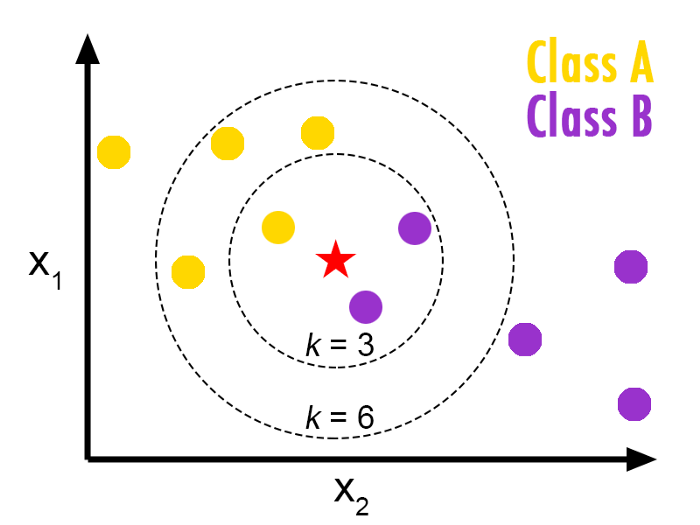

Machine learning (2)
Classification
Classification Problems
Classification problem
- Binary Classification
- Goal is to make a prediction \(c_n = f(x_{1,1}, ... x_{k,n})\) …
- …where \(c_i\) is a binary variable (\(\in\{0,1\}\))
- … and \((x_{i,n})_k\), \(k\) different features to predict \(c_n\)
- Multicategory Classification
- The variable to predict takes values in a non ordered set with \(p\) different values
Logistic regression
- Given a regression model (a linear predictor)
\[ a_0 + a_1 x_1 + a_2 x_2 + \cdots a_n x_n \] - one can build a classification model: \[ f(x_1, ..., x_n) = \sigma( a_0 + a_1 x_1 + a_2 x_2 + \cdots a_n x_n )\] where \(\sigma(x)=\frac{1}{1+\exp(-x)}\) is the logistic function a.k.a. sigmoid - The loss function to minimize is: \[L() = \sum_n (c_n - \sigma( a_{0} + a_1 x_{1,n} + a_2 x_{2,n} + \cdots a_k x_{k,n} ) )^2\] - This works for any regression model (LASSO, RIDGE, nonlinear…)

Logistic regression
- The linear model predicts an intensity/score (not a category) \[ f(x_1, ..., x_n) = \sigma( \underbrace{a_0 + a_1 x_1 + a_2 x_2 + \cdots a_n x_n }_{\text{score}})\]
- To make a prediction: round to 0 or 1.

Multinomial regression
- If there are \(P\) categories to predict:
- build a linear predictor \(f_p\) for each category \(p\)
- linear predictor is also called score
- To predict:
- evaluate the score of all categories
- choose the one with highest score
- To train the model:
- train separately all scores (works for any predictor, not just linear)
- … there are more subtle approaches (not here)
Other Classifiers
Common classification algorithms
There are many - Logistic Regression - Naive Bayes Classifier - Nearest Distance - neural networks (replace score in sigmoid by n.n.) - Decision Trees - Support Vector Machines
Nearest distance
- Idea:
- in order to predict category \(c\) corresponding to \(x\) find the closest point \(x_0\) in the training set
- Assign to \(x\) the same category as \(x_0\)
- But this would be very susceptible to noise
- Amended idea: \(k-nearest\) neighbours
- look for the \(k\) points closest to \(x\)
- label \(x\) with the same category as the majority of them
- Remark: this algorithm uses Euclidean distance. This is why it is important to normalize the dataset.
